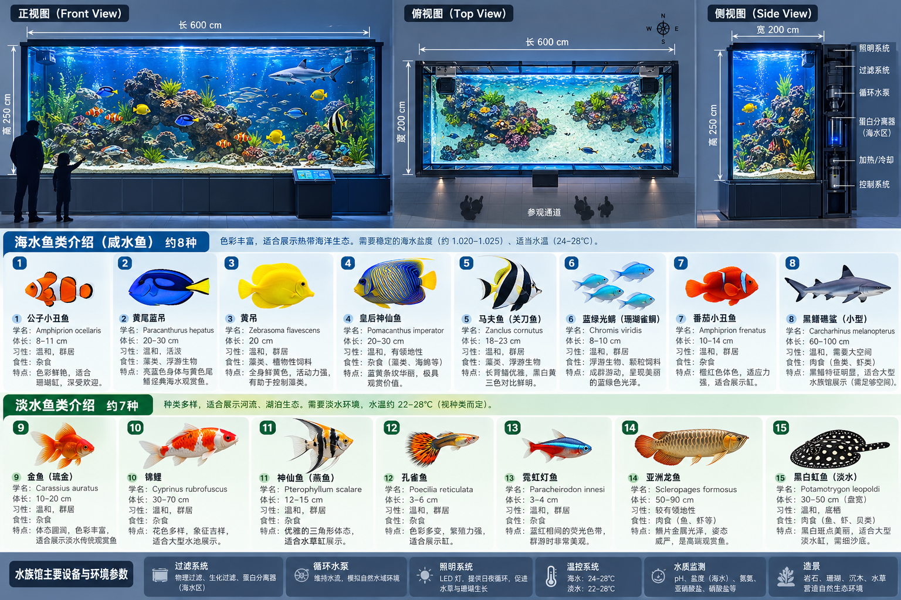

资料资产 · 水族馆方案
水族馆规划与鱼类介绍
原始资料图已嵌入本页面，可直接浏览与保存。

鱼缸外部尺寸（图示）长 600 × 宽 200 × 高 250 cm
展示鱼类分类（图示）海水约 8 种 · 淡水约 7 种
设备与环境（图示）过滤、循环、照明、温控、水质监测
图中文字与参数按用户提供的原始资料图记录；鱼类适配、密度与设备选型需以实际水族工程方案为准。
原始资料图已嵌入本页面，可直接浏览与保存。

图中文字与参数按用户提供的原始资料图记录；鱼类适配、密度与设备选型需以实际水族工程方案为准。